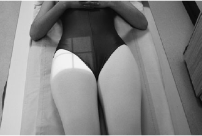

Hip(AP)
Centering point:The vertical central ray is directed 2.5 cm distally along the
perpendicular bisector of a line joining the anterior superior
iliac spine and the symphysis pubis over the femoral pulse

Cassette Size:24cm x 30cm (12 x 10 ins)
Potrait
Exposure Factors:70kVp on
20MaS
FFD:100cm
Bucky/Grid:Moving or Stationary Grid
Filter:No
Collimation:Collimate to four sides of interest
Pathologies:Fracture, Lesions, Joint narrowing
Position of patient and cassette
- The patient lies supine and symmetrical on the X-ray table,
with the median sagittal plane perpendicular to the tabletop
- To avoid pelvic rotation, the anterior superior iliac spines
must be equidistant from the tabletop
- The affected limb is internally rotated to bring the neck of
the femur parallel to the tabletop, and is then supported by
sandbags